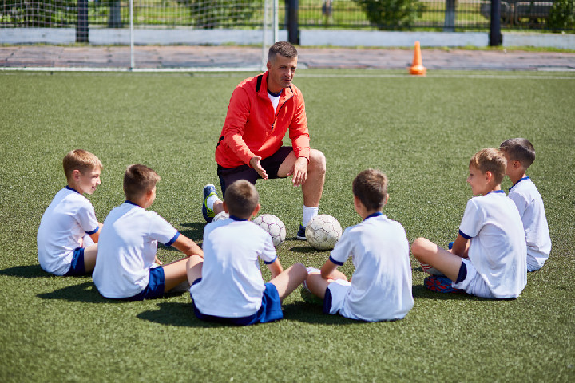

A képzésről
Sport ágazat képzése, amely érettségi és technikusi szintű szakképzettség megszerzésével zárul.
Választható sportágak: a szakképzettség megszerzésére irányuló képzés azokban a sportágakban szervezhető, amelyekben a sportról szóló 2004. évi I. törvényben foglaltaknak megfelelő országos sportági szakszövetség vagy annak feladatait ellátó országos sportági szövetség működik.
A sportedző - sportszervező szakember sportágspecifikusan, célirányosan tervezi, szervezi és irányítja a sportolók, csapatok rövid-, közép- és hosszú távú felkészítését és versenyeztetését. Megtanítja a sportág technikai, taktikai és játékrendszer ismereteit, játék- és versenyszabályait. Értékeli a sportolók edzéseken és a versenyeken nyújtott teljesítményét, a korszerű pedagógiai- és edzéselvek, edzésmódszerek figyelembevételével fejleszti teljesítőképességüket és teljesítőkészségüket. Edzőmérkőzéseket és -versenyeket, illetve edzőtáborokat, valamint egyéb sportrendezvényeket szervez. Részt vehet a szabadidős sportolók foglalkozásai, versenyei szervezésében, irányításában. Tanácsaival segíti az egészséges életmódra törekvők sportolási programjának összeállítását. Vezetési, szervezési és pénzügyi tanulmányaira alapozva részt vehet sportklubok, szakosztályok munkájában, irányításában. Sporthoz és rekreációhoz kapcsolódó rendezvényeket szervez.
Ajánlott minden fiatal számára, akinek a sport, sportolás iránti elkötelezettsége oly mértékű, hogy szívesen választja ezt a területet hivatásául.